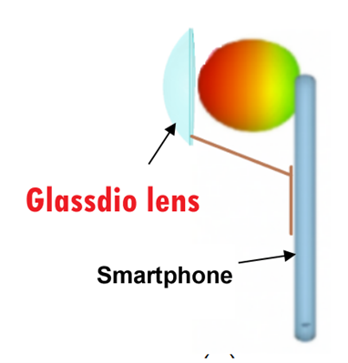
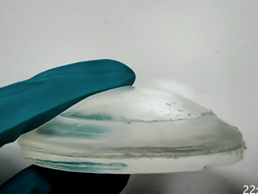

Glassdio Scientific Limited
Glassdio Scientific Limited
-

Innovation
New concepts and methods
New products and technologies -

Convenience
World wide connection
Lifestyle changes -

Outstanding
Better performance in the industry
New concepts and methods
New products and technologies
World wide connection
Lifestyle changes
Better performance in the industry

Existing 5G Problem: Weak 5G occurs indoors (high-rises, basements, complex layouts), in rural areas, urban canyons, and inside vehicles (glass loss ~3 dB), with additional degradation during rain/smog and under congestion (lower SINR). Impacts: low throughput, unstable uplink, and service outages at critical moments.
Our product solution: A category-first, magnetic, snap-on transparent EM lens that attaches to common phone stand rings. It forward-focuses energy at typical top rear smartphone antenna locations, improving the link without modifying the handset or case.
Evidence and comparison: Field tests: Throughput: +50–80% median improvement in low to moderate SINR (0–10 dB) mid-band 5G
Key features:
-Ergonomics and portability: ~55 g; attaches/detaches in seconds; compact 100 mm lens diameter with ~18 mm center thickness; slightly flexible; fits in handbags or pockets.
-App-assisted aiming: our app provides instant signal-strength detection and on-screen guidance to find the best direction quickly.
-Versatility: can assist CPEs needing ~3 dB extra link margin; helps offset ~3 dB vehicle glass loss when used near windows or dash.
Core value proposition: Instant, portable 5G link boost for any smartphone. The magnetic, snap-on transparent lens focuses energy toward the phone’s antennas to raise RSRP/SINR and increase data rates in weak-signal or congested areas—without modifying the phone, using power, or adding bulk—and pairs with an app for rapid, user-friendly aiming and setup.
Note: This product is under development and is expected to be completed before the end of 2025. Specifications and data may be modified based on the development process
